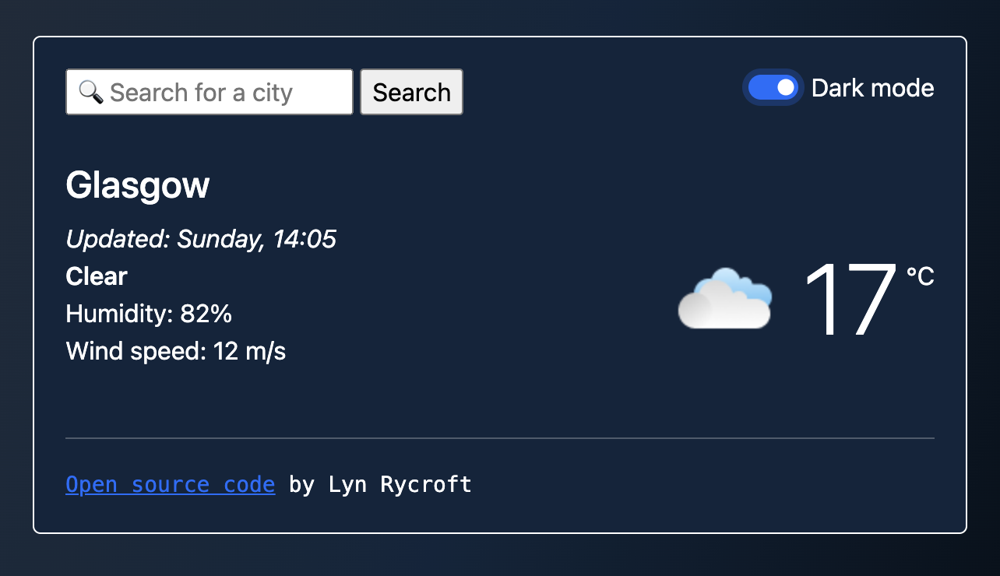
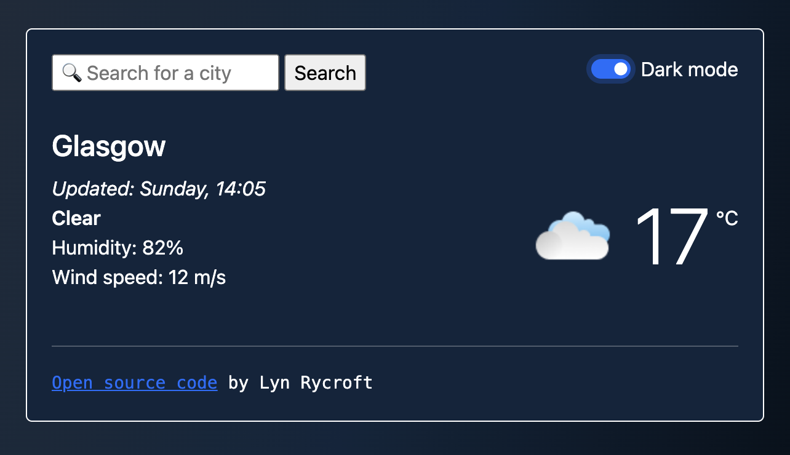

Weather app
A web-based weather application, showing current conditions and a five day forecast for a chosen location.

Weather app, light theme

Weather app, dark theme

Weather app, alternative styling
Weather app
As a coding challenge, I tackled the API-call-laiden world of a weather app. The brief was to create an application which would
give the current conditions and a five-day forecast for any city that a user entered, by calling a weather API and returning selected
information to the user.
Each of the weather APIs I tried out provided their own weather icons, and so naturally I let their color scheme influence the styling
of the app, in order to present a joined-up visual experience.
While I started out using one API with predominantly orange and black themed icons, after doing some preliminary styling I found another API which
was easier to work with, but which had a very different color scheme. The orange, black, and white app became the alternative styling (with an attempt
at a nod to the fashion for 90s-inspired design), while the blues, pinks, and purples of the new API icons gave way to a 'unicorn' styled app.
Once I got the API calls under my belt, I also added an additional style sheet to try out a dark-themed styling for the 'unicorn' weather app, which
retains a blue hue.
This project also marked the start of me getting to grips with testing via Cypress. Both apps contain a link to their GitHub repositories.
A web-based weather application, showing current conditions and a five day forecast for a chosen location.
Weather app, light theme
Weather app, dark theme
Weather app, alternative styling
Weather app
As a coding challenge, I tackled the API-call-laiden world of a weather app. The brief was to create an application which would give the current conditions and a five-day forecast for any city that a user entered, by calling a weather API and returning selected information to the user.
Each of the weather APIs I tried out provided their own weather icons, and so naturally I let their color scheme influence the styling of the app, in order to present a joined-up visual experience.
While I started out using one API with predominantly orange and black themed icons, after doing some preliminary styling I found another API which was easier to work with, but which had a very different color scheme. The orange, black, and white app became the alternative styling (with an attempt at a nod to the fashion for 90s-inspired design), while the blues, pinks, and purples of the new API icons gave way to a 'unicorn' styled app.
Once I got the API calls under my belt, I also added an additional style sheet to try out a dark-themed styling for the 'unicorn' weather app, which retains a blue hue.
This project also marked the start of me getting to grips with testing via Cypress. Both apps contain a link to their GitHub repositories.